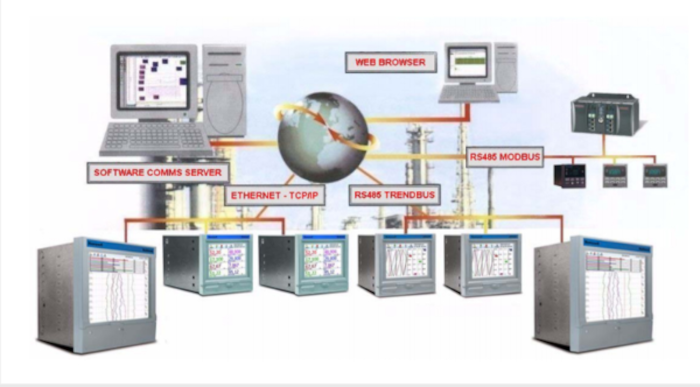

Os métodos de limpeza de módolos fotovoltaicos, disponiveis no país, são, em sua maioria, baseados em processos manuais e pouco eficiente para plantas de médio e grande porte. Analizando o tamanho do problema de limpeza de módulos fotovoltaicos, percebe-se que ele só tende a aumentar no Brasil, uma vez que a capacidade estalada cresce de forma exponencial por todo o país.
Surgimento do sitema supervisório
No início da automação industrial as industrias dependiam do trabalho manual no chão de fabrica para o controle e monitoramento dos processos. Com isso um técnico expecializado se deslocava até o local e coletava todos os dados, variações e demais, tudo isso feito por meio de anotações e caso ouvesse a nescecidade de alguns manuseio, era feito manualmente manualmente pelo proprio técnico. Com os avanços da tecnologia, computação, sistemas de comunicação e com a necessidade de monitoramento e controle dos processos da industria de forma remota e mais eficiente, surge o sistema supervisório.
www.youtube.com/@FredericoSchaf
O que é sistema supervisório?
É um conjunto de ferramentas e metódos que fazem a coleta, monitoramento e armazenamento de informações do processo produtivo. Esse Software ajuda no gerenciamento industrial colhendo dados em tempo real como: temperatura, nível, vasão, etc., por meio de sensores e outros instrumentos de medição. Essas informações são armazenadas, organizadas e posteriormente passadas ao usuário por meio de telas de interface gráfica.

www.youtube.com/@FredericoSchaf
Interface gráfica
Interface gráfica, também conhecida como GUI é um tipo de interface de usuário que permite a interação com dispositivos eletrônicos por meio de elementos visuais, como janelas, botões, ícones e menus, em vez de comandos de texto ou linhas de código.
Ela facilita o uso de softwares e sistemas operacionais, tornando-os mais acessíveis para usuários sem conhecimento técnico avançado. Exemplos comuns de interfaces gráficas incluem os sistemas Windows, macOS, aplicativos móveis e programas como navegadores de internet.
Os componentes principais de uma interface gráfica incluem:
Janelas – Áreas retangulares onde o conteúdo do software é exibido.Botões – Elementos clicáveis para executar ações.Ícones – Pequenos gráficos que representam arquivos, programas ou funções.Menus – Listas de opções ou comandos disponíveis.
Em resumo, uma GUI melhora a experiência do usuário, tornando a interação mais intuitiva e visualmente agradável.
A HMI (Interface homem máquina) é um tipo específico de interface gráfica usada para a interação entre humanos e máquinas, principalmente em processos industriais e automação.
O que é?
A HMI é uma tela ou painel digital que permite monitorar e controlar máquinas, processos e sistemas industriais. Ela exibe dados em tempo real, gráficos, botões e alertas para facilitar a operação.
Onde é usada?
Indústrias automotivas.
Manufatura.
Energia e utilities.
Controle de processos (como em fábricas e usinas).
Em resumo, HMI é a interface gráfica que conecta operadores a máquinas, permitindo um controle mais eficiente e seguro dos processos.
Quer saber mais sobre sistema supervisório?
Acesse Tudo sobre sistema supervisório e acesse o video do YouTube a seguir.
VIDEO